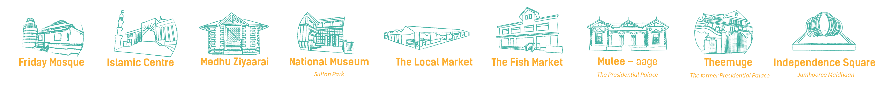

Discover the Sunny side of Life
Sunny all year long, Waves like nowhere else, Underwater beauty like paradise! Visit Maldives for a perfect holiday.
EXPLORE MALDIVES
Welcome to the Maldives, where sands are white as the smiles of the locals, where fish swim happily in the warm waters of the Indian Ocean, where the weather is a dream, and the deep rays of the sun waits to engulf you in their arms.

Events Pro | Info: There are no events created, add some please.
THINGS YOU CAN DO ARE ENDLESS
Find out the best things to do, places to go and activities to indulge yourself

The Thrilling Side Of Life
Thrills galore Because of its marine location, the Maldives boasts every kind of water-based adventure sport from paddling around a lagoon in a transparent hulled canoe to being propelled several metres below the surface of the sea by underwater scooter, or gliding several metres above the surface dangling from a parachute behind a speedboat. For the energetic and adventurous, the Maldives is just as rewarding a destination as it is for the laidback sun worshiper or sophisticated epicure. With 99% of its territory being sea, the Maldives is one of the world’s leading watersports hubs with its environment of islands and turquoise blue waters forming the perfect combination for a natural watersports arena. All the resorts and the inhabited islands popular with tourists have a watersports centre of some kind, either with a fleet of windsurf boards, sails and other equipment, or just a couple of wakeboards.

The Fun Side Of Life
Having fun in the Maldives The Maldives is unusual as a holiday destination because of the fun things to do whether you are staying on a plush resort, in Male’, or in a simple guesthouse on an island in a faraway atoll. Entertainment and daily excursions are organised at every resort so don’t be shy about joining in. Excursions will include fishing and cruising (to watch dolphins dance) as well as visits to the capital, Male’, and to genuinely deserted islands, perhaps for swimming and a picnic, and shopping expeditions to neighboring inhabited islands. If you stay in a guesthouse on an inhabited island, you will have the chance to meet Maldivians, experience local culture and cuisine, and join in what the islanders do for relaxation, such as playing football in the late afternoon or relaxing over a soft drink and eating “short eats” (small snacks) in a seaside café. […]

The Maldivian Side Of Life
Getting to know the Maldives The Maldives offers so much more than sand, sun and sea as the islands are blessed with a rich culture and heritage. A holiday in the Maldives is a chance to gain an insight into this unique country, by exploring island villages, sourcing local handicrafts, visiting heritage sites and the National Museum, tasting local cuisine, and watching cultural performances. With a total area approximately the size of Portugal but a land area comprising islands and sandbanks about the size of Singapore, islanders were isolated from each other by the ocean that forms over 99% of the country. Their self-sufficiency is reflected in the implements and clothes they fashioned for themselves, which have become today’s handicrafts, and in agriculture. Some islands are very fertile, lush with mangroves and with interior ponds. Every island supports vegetation of some kind with coconuts somehow managing to thrive in a […]

The Romantic Side of Life
Perfect Privacy For couples, a romantic holiday in the Maldives is a chance to be together in a way that never happens at home. Accommodation on a resort is not just a room, it’s a private love nest designed for the romantic. Villas are secluded in lush vegetation or isolated above a lagoon. The interior décor is soft, muted tones of distinction, the furnishings are impeccable, the bed is large and blissfully comfortable, the bathroom luxurious. Gaze from the veranda to a panoramic view of the lagoon lapping the beach and of coconut palms waving on the shore. Even the breeze seems to whisper romance. Just as there are resorts more suitable for families with children or for enthusiastic divers, there are also resorts designed for those in love, whether beginning life together, renewing their vows, celebrating a wedding anniversary, commemorating their years of partnership, or simply wanting to get […]

The Spiritual Side Of Life
Mind, body and spirit benefit from the serenity of a holiday in the Maldives especially when this is enhanced with relaxing and rejuvenating sessions at a resort’s spa. There are an estimated 110 top quality spas at island resorts plus some spas in Male’ and even one in the public terminal at the Ibrahim Nasir International Airport, as well as informal ones catering to guests staying on inhabited islands.

The Colourful Side Of Life
The Colourful Side Of Life

Malahini Kuda Bandos
Located a short ten-minute boat ride from the International Airport, Malahini Kuda Bandos brings to you basic luxury without breaking your bank. With our laid back, barefoot culture, and our vibrant crew ready to

Canopus Retreats Thulusdhoo
Experience Island Life with Canopus Retreat Thulusdhoo. We offer a stylish and modern accommodation with an incredible ocean view. Enjoy a wide range of excursions including island picnic, fishing, sandbank trips, sunset kayaking, dolphin cruise, snorkeling trips, surfing, diving and water sports. Finish off the day with a visit to our spa to enjoy a

Holiday Inn Resort Kandooma
Holiday Inn Resort® Kandooma Maldives is conveniently situated on the South Male Atoll, adjacent to world-class diving and surfing sites. As an internationally recognized mid-scale brand, it offers real value with a fresh, modern approach in a friendly environment. The hotel’s practical comfort and modern design provide a haven for hardworking travelers seeking balance in their lives. Offering smart casual dining, extensive water sports and activities, dedicated kids service and a refreshing spa, Holiday Inn Resort® Kandooma Maldives is the ideal gathering place for friends and families. Guests can choose to relax or enjoy an active getaway, knowing they will be genuinely welcomed and valued throughout their stay. Named after the abundant Kandoo tree, Kandooma welcomes you to stunning views of the Indian Ocean and soothing wave lullabies. Take your pick from 160 villas available in 8 different categories – any choice is a delight. All villas are designed with cool clean lines of whitewashed timber, and large picture windows that look out to the great blue outdoors. Grab your flippers and head on over. The perfect balance of relaxation and adventure awaits you at Holiday Inn Resort® Kandooma Maldives!

MO Hotel Laamu
Your journey begins with a short 45 minute flight from the capitalW city of Male, which will bring you to Kahdhdhoo Airport, Laamu Atoll, from which we are a 10 minute drive away. Ideally suited for romantic getaways and family trips alike, we are located by the pristine white sands and crystal clear waters. Guests are free to indulge in use of our facilities including gymnasium, spa, and swimming pool. Additionally, we also offer water sports facilities ranging from night fishing to snorkeling and diving. Bitz Kitchen is equipped with the latest in the industry, serving continental and cuisine buffets as well as an a la carte menu befitting all. Bubble Bar and Dot Café also serve MO Hotel’s famous pizza, fresh drinks and other snacks to other public areas of the hotel such as the poolside, offering something for every mood. MO Spa will ensure that your relaxation needs are satisfied, your “me-time” will have a place here as much as all else. The choice between enjoying our lush gardens, plunging into our pool or taking a dip into the Indian Ocean from our private beach remains as we experience hot weather all year round. MO hospitality aims to […]

Fushifaru Maldives
Located on the eastern fringe of Lhaviyani Atoll and just a 35 minute Seaplane ride away, sits this exquisite little island between two channels connecting the atoll’s inner lagoon to the outer sea, whilst a large sand bank lies on one side. Fushifaru Kan’du is a national Marine Protected Area teeming with marine life. Only few metres from the island is three major dive sites including the renowned Fushifaru Thila, one of the Maldives most iconic dive spots and a marine cleaning station, where sums of cleaner fish draw in underwater creatures like Manta Rays, Turtles and many more. Merging Maldivian design and architecture with modern aesthetics, Fushifaru Maldives’ offers accommodation on both land and water. A total of 49 Villas exude a sense of cosiness, yet luxurious in space and amenities. Guests have an option of dining at Korakali for International cuisine, Raakani for signature Asian recipes with a focus on the finest local varieties of seafood and Fanihandhi Bar for pool side snacks and sunset cocktails. Heylhi Spa, our wellness sanctuary will sooth any tired soul whilst our multi-sports court and various exciting water activities will keep our guests vibrant with energy.

Weather & Climate
Maldives, the sunny side of life is blessed with magical and breathtaking displays of sunshine for the better part of a year. Similar to tropical countries, the Maldives enjoys a dry and wet season. Conveniently, the hot and humid weather is complemented with cooling sea breezes and periodic rain.
MALE
31°
broken clouds humidity: 79% wind: 4m/s ENE H 30 • L 29
Malé City
Male’ is the capital city of the Maldives and the seat of the executive, legislature and judicial branches of the government of the Maldives. Male’ is also the financial and commercial capital of the country. Accordingly major government offices, banks and businesses are based on Male’. Male’ city is one of the most densely populated cities of the world. Administratively neighbouring islands of Villingili and Hulhumale’ are considered as constituencies of Male’ City. Hulhumale’ is an artificially reclaimed island.
Geography & Location
Republic of the Maldives is a sovereign archipelagic nation positioned in the Indian Ocean. Notably the South Asian Island nation has no counterpart in the entire world in terms of its unique geography and topography.